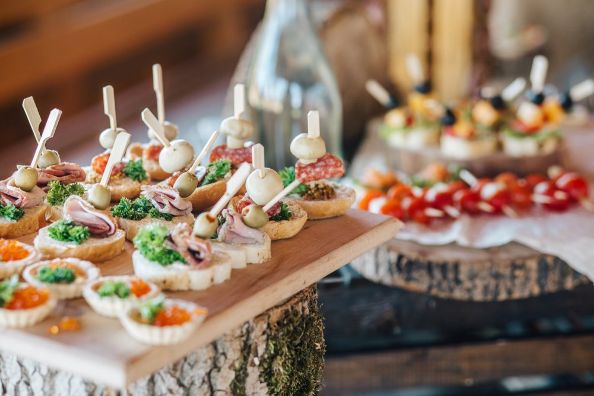

La Maternelle de Moustache : outils et ressources ... Soif de recettes ? On se donne rendez-vous dans votre boîte mail ! Découvrir nos newsletters. Retrouvez Marmiton où que vous soyez en téléchargeant l'application. Concocté avec ♥ par Marmiton. Tous droits réservés Marmiton.org - 1999-2021.
recettes | metro Des recettes (collations, desserts) qui se congèlent bien. ( Répondre ) - J`ai un reste de fromage romano et je veux faire des petites quiches aux œufs sans pâte c`est à dire que je vais les faire cuire dans des petits moules à muffins en silicone.
LES MEILLEURES RECETTES DE MUFFINS Lincoln | Conseil & Expertise Data Grâce à 30 ans d'expertise, Lincoln donne du sens à vos données. Lincoln vous accompagne dans vos projets Big Data, Business Intelligence, Data Science, BI, Dataviz, Data Ingénierie, Data analyse, Intelligence Artificielle.vie de lincoln data science pôle conseil datanews clients
Recettes santé faciles à faire | Canal Vie Plus de 600 recettes pour se régaler ! Pour une cuisine facile, savoureuse et gourmande : trouvez des idées de menus, plats, entrées et desserts pour tous les goûts !
Lincoln | Conseil & Expertise Data Vous cherchez des recettes pour gateau ? Les Foodies vous présente 5000 recettes avec photos à découvrir au plus vite !
Accueil - Le Jardin Mobile Bouillon Concentré Recettes. Trouvez votre idéal de saveur avec le bouillon concentré Campbell’s! Nos bouillons concentrés sont jusqu’à quatre fois plus concentrés que nos bouillons prêts à utiliser.
Lincoln | Conseil & Expertise Data
2021.04.10 16:53

Qui sommes nous ? Nos expertises Data Ingénierie Data Science Data Digital Métiers Notre approche Conseil Innovation Formations Recrutement Actualités Communautés Chatbot RH Nous contacter hello @ lincoln.fr | +33 (0)1 46 08 70 73 Formation Recrutement Conseil et expertise en ingénierie et science des données
Lincoln donne du sens à vos données
00 M€ de CA annuel 000 collaborateurs 00 clients
Expertises
Nous associons savoir-faire techniques, méthodologiques et fonctionnels pour répondre aux problématiques Data de nos clients
Data Ingénierie
Conception, déploiement et évolution de plateformes décisionnelles et Big Data
Data Science
Analyse de données complexes et à l’échelle des (Big) Data
Data Digital
Transformation digitale, conduite du changement, UX/UI
Métiers
Accompagnement Data Driven des lignes de Métiers
Pôle Conseil
Nous accompagnons et conseillons nos clients dans leurs projets stratégiques Data
En savoir plus sur le Pôle Conseil
Expérimentations de solutions innovantes en data science et intelligence artificielle
Découvrez l’innovation par Lincoln
Lincoln recrute
DATA ENGINEER DATA SCIENTIST DIGITAL
Nous recrutons 110 collaborateurs en 2020
Voir nos offres Espace carrières
Actualités
Tout Datanews Décryptages Offre Projets clients Vie de Lincoln LINCOLN déploie ses ressources pour séduire les étudiants ! Datanews / 24.11.2020 Book Offres de Stages LINCOLN 2020 2021 Offre, Vie de Lincoln / 23.11.2020 Améliorer la qualité réseau Télécom grâce au Big Data Décryptages / 28.10.2020 Lincoln reçoit le prix du Meilleur Effort de Certification EMEA par Dataiku Datanews / 21.10.2020 Pourquoi rejoindre Lincoln ? Nos secrets vous sont dévoilés ! Datanews / 15.07.2020 Expertise LINCOLN Intelligence Artificielle / Chatbot Datanews, Offre, Projets clients, Vie de Lincoln / 02.07.2020 Ouverture des bureaux LINCOLN Lyon Datanews, Projets clients, Vie de Lincoln / 23.06.2020
Si vous souhaitez en savoir plus sur nos expertises, n’hésitez pas à nous joindre à l’adresse hello@ lincoln.fr , par téléphone au +33 (0)1 46 08 70 73 ou via notre formulaire de contact :